The Subaru WRX is an all-wheel drive sport compact car manufactured by the Japanese automaker Subaru, originally based on the Impreza created for the World Rally Championship in 1992. Subaru claimed the name WRX stands for "World Rally eXperimental". Starting with the 2015 models, the WRX lineup has been split from the Impreza, with a different body style that is not offered as an optional hatchback/wagon, being introduced as the separate Levorg model. The car is known for its striking blue shade, with gold alloy wheels, because of a sponsorship with a Singaporean cigarette manufacturer.
For the VA series WRX released in 2014 for the 2015 model year, Subaru decided to move away from marketing the WRX and WRX STI under the Impreza name. This time, the Impreza name was dropped in all markets in which the new model is named simply as the WRX, as had been the case in North America with the previous model, while in Japan it was sold as the WRX S4.
The WRX and WRX STI are the performance model based on the GJ Impreza with higher output engines, firmer suspension, larger brakes, slightly resculpted body panels, lowered ride height and larger intakes. The body design also took a stronger departure from the Impreza donor model than in the past. The general WRX profile/silhouette was carried over from the Impreza, as were the front doors, trunk lid, and interior. However, the entire front end bodywork plus the rear quarter panels were unique to the WRX. The rear doors received a subtle reskin with an upwards kink and revised character line, but retained an otherwise identical shape.
Subaru had promised to completely move the WRX and STI off the Impreza chassis and body to create a standalone model.[16] The VA-body WRX is based on a modified Impreza body and chassis, with the Impreza name dropped from the WRX in all markets. For this generation, Subaru decided to not produce a WRX or WRX STI hatchback as had been previously offered. The previous generation hatchback made up approximately 50 percent of US WRX and WRX STI sales.
In 2015, Subaru released the WRX STI Launch Edition, with 1000 units being offered in North America. All 1,000 of these Launch Edition models were painted in World Rally Blue Pearl along with gold-painted 18-inch BBS forged alloy wheels. On to the interior, black stitching and blue leather accents were seen on the door cards as well as on the floormats and Alcantara-covered seats. All of the Launch Edition cars received a short throw shifter and keyless access with pushbutton start.
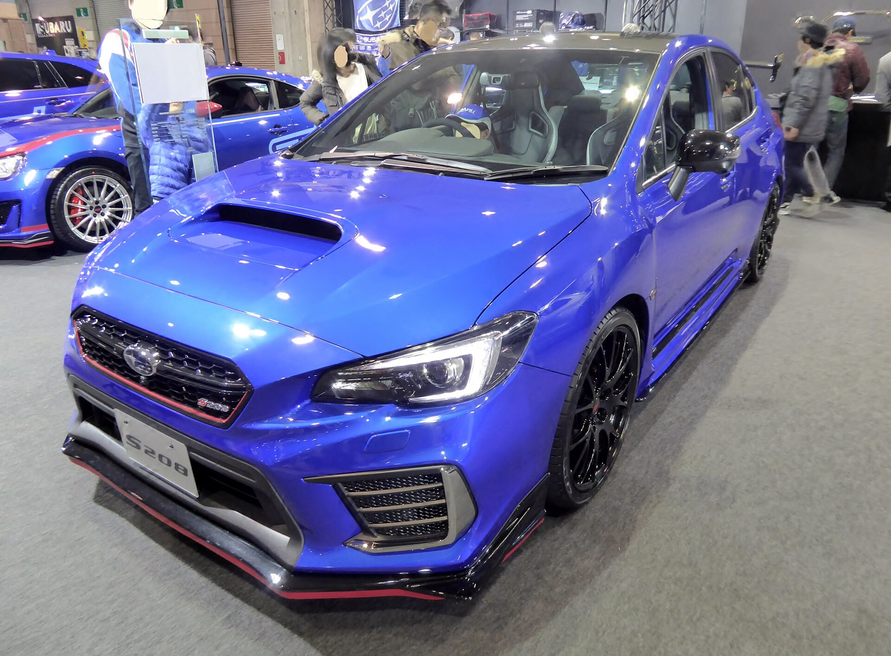
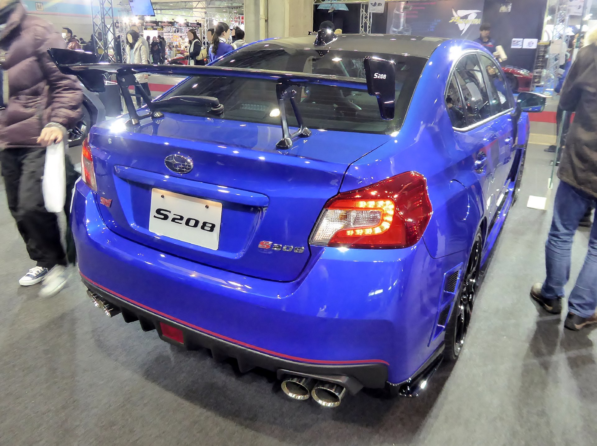
In the same year, Subaru also released the WRX STI S207, limited to 400 units sold only for the Japanese market. The S207 used the 2 litre EJ20 engine which was tuned to 241 kW (328 PS; 323 hp) and 318 lb⋅ft (431 N⋅m) of torque. Upgrades also include a quicker-ratio 11-to-1 steering rack (compared to 13-to-1 for the stock unit). STI-spec Recaro front bucket seats, Bilstein adjustable DampMatic II front suspension, and drilled rotors clamped by Brembo monoblock six-piston front calipers and four-pot rear calipers. Up to 200 of the units could be equipped with the NBR Challenge Package, which features a carbon-fibre wing and a badge commemorating Subaru's class victory at the 2015 Nürburgring 24 Hours.
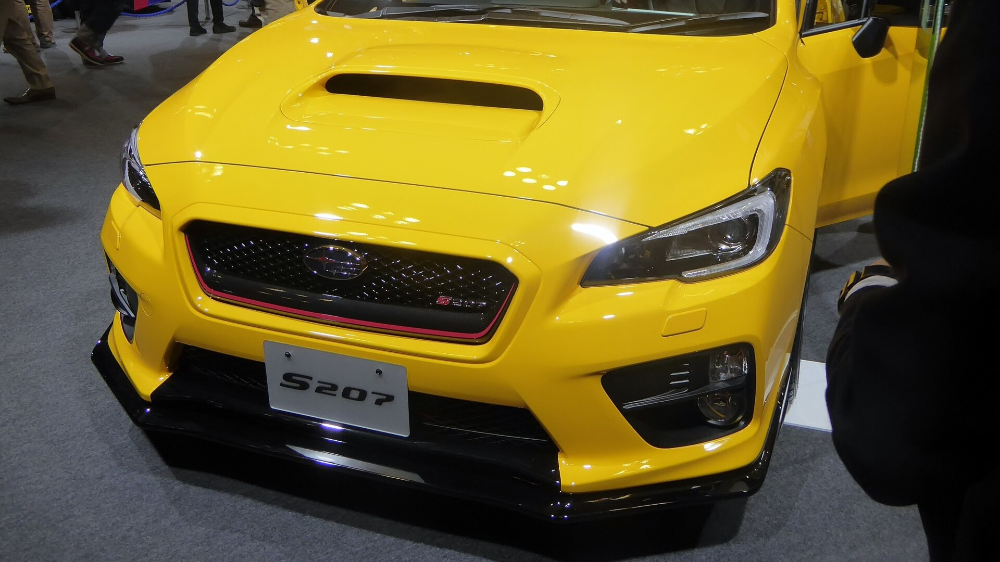
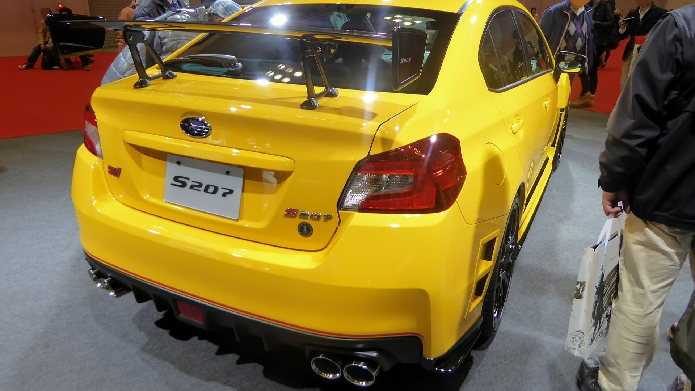
In 2016, Subaru released the WRX STI Hyper Blue special edition series, with production limited to 700 units for the United States. The new color covers the outside, and it is also offset with gloss black 18-inch BBS wheels, badges and mirror caps. Blue stitching brings the color into the interior, and Subaru's seven-inch navigation system with a nine-speaker stereo is standard for this version. In Australia, Subaru announced the WRX Premium Hyper Blue special edition with the CVT automatic will be limited to 200 units targeted to customers, and WRX STI Premium with the six-speed gearbox will be limited to just 50 units. Canada was given 200 units named "Hikari" (Japanese for the word shine), with turnkey start, basic stereo non-GPS head unit and moon roof.
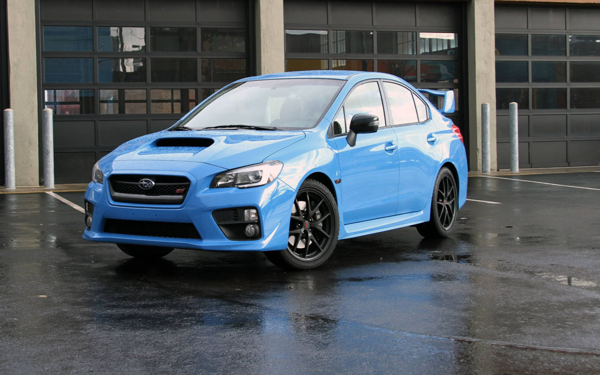
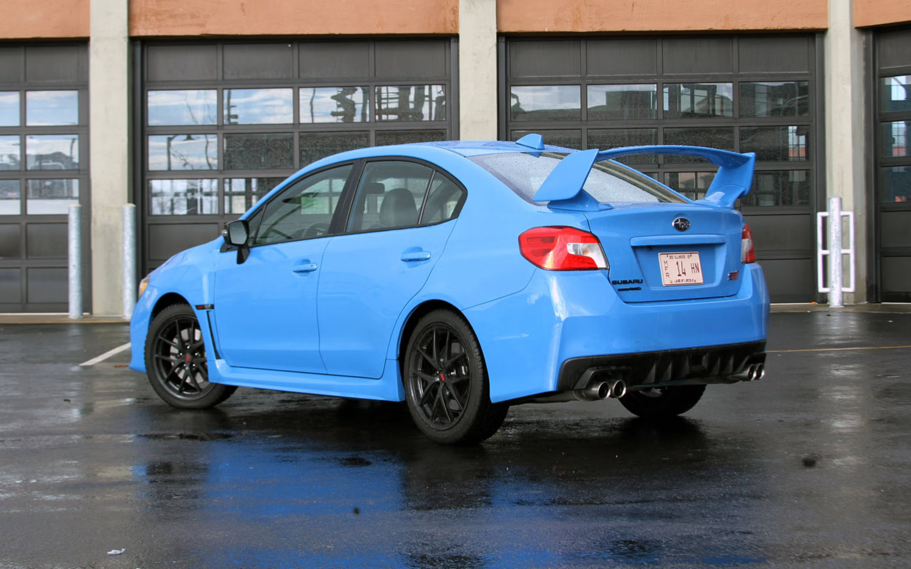
In 2017, Subaru released the WRX STI S208, limited to 450 units sold only for the Japanese market. The S208 used a 2.0-litre EJ20 engine tuned to 329 hp (245 kW) and 432 N⋅m (319 lbf⋅ft) of torque. It has other upgrades similar to those of the WRX STI S207- a quicker 11:1 ratio steering rack, Bilstein DampMatic II front suspension, Recaro front bucket seats, 19-inch BBS wheels, drilled rotors clamped by Brembo monoblock six-piston front calipers and four-pot rear calipers, intercooler water spray, a torque vectoring system, and more. Up to 350 units could be equipped with the NBR Challenge Package, which features a carbon fibre wing, front lip spoiler, and roof. The S208 was offered in 3 colors- WR Blue Pearl, Crystal White Pearl, and Cool Grey Khaki (only available with the NBR Challenge Package). Standard models cost ¥6,264,000 with tax and NBR Challenge Package-equipped models cost ¥6,890,400 ($63,229) with the carbon fibre lip spoiler or ¥7,106,400 with the carbon fibre rear
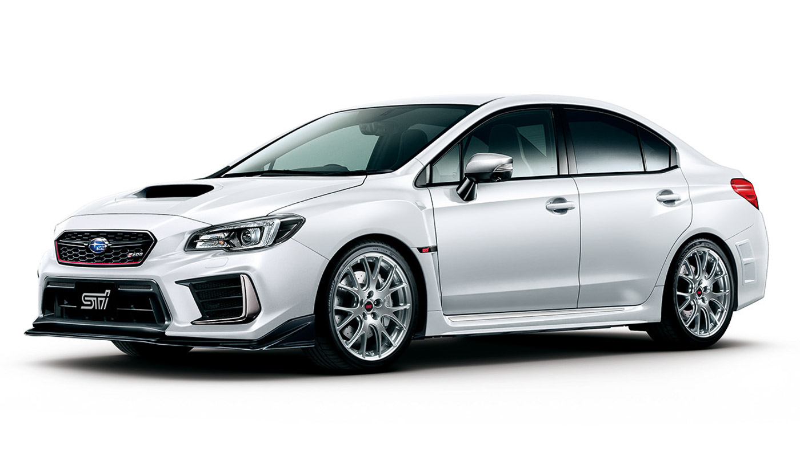
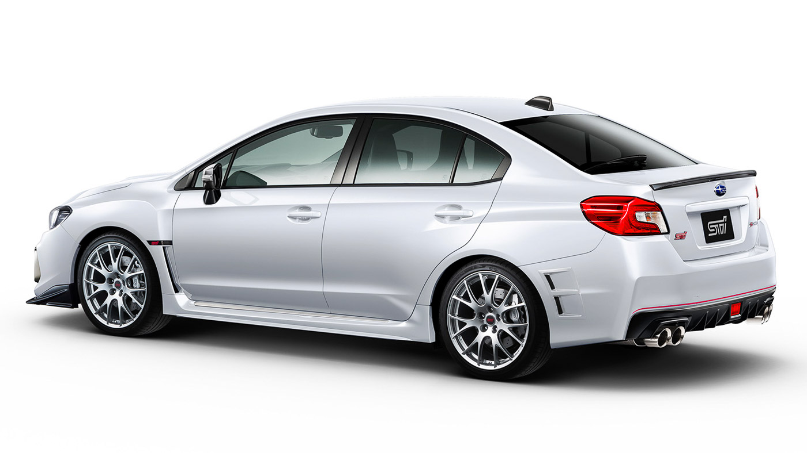
As a way of celebrating 30 years of the STI nameplate (in 2018), Subaru offered a limited-edition WRX STI Diamond Edition which was developed by Subaru Southern Africa's technical team, making it exclusively available to the region with only 30 being produced. The WRX STI Diamond Edition is powered by a 2.5-litre, high-boost turbocharged Boxer engine that offers 260 kW (350 hp) at 4,500 rpm and 464 N⋅m (342 lb⋅ft) of torque at 4,000 rpm. The remapping of the electronic control unit and the fitment of a performance exhaust system has contributed to improved performance. A new engine brace has been fitted for better stability and balance. The WRX STI Diamond Edition rides 20 mm lower than the standard WRX STI and the body kit, in a High Viz yellow, further lowers the front end by 10 mm. The spoiler vane gets a stainless steel STI badge unique to this limited-edition model and high-gloss black Diamond Edition badges appear on the sides of the rear wing. The WRX STI Diamond Edition rides on 19-inch lightweight and darkened aluminum Y-design alloy wheels.
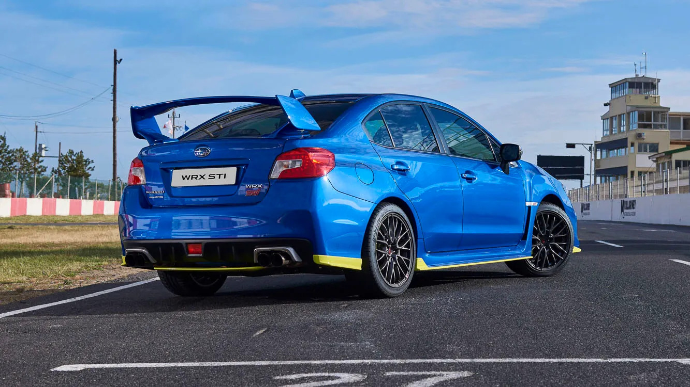
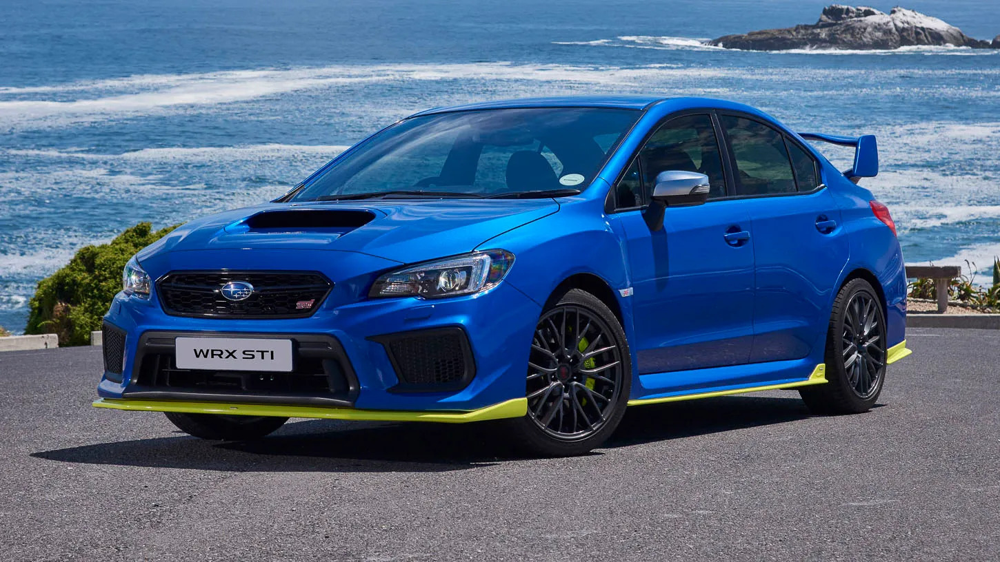
For Subaru's 50th anniversary in 2018, the WRX, along with each other model Subaru made, received a limited-edition version featuring a top-trimmed vehicle with exclusive heritage blue coloring, a satin chrome stylization, and 50th anniversary accents. These accents include badging on the side of the vehicle, silver themed interior featuring silver stitching and silver seatbelts, and Recaro seats with an embroidered celebratory 50th anniversary symbol, along with matching floor mats. Production was limited to 1,050 units for the Crosstrek, Forester, Impreza, Legacy and Outback, along with the BRZ getting 250, while the WRX received 600 units, and the STI received 200, for a total of 6300 cars.
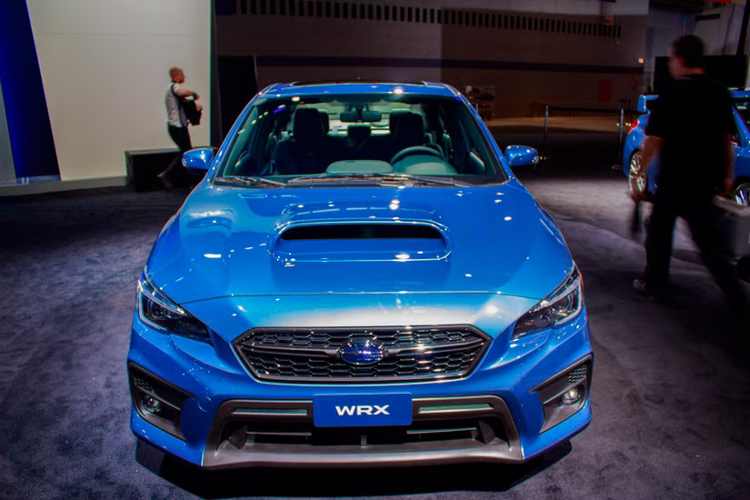
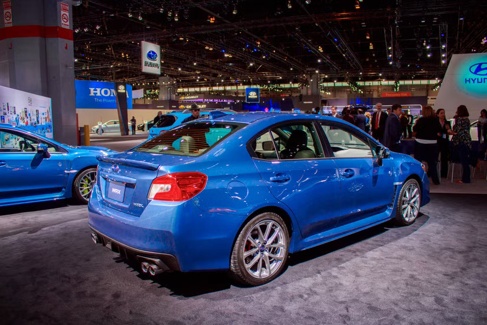
For the 2018 model year, Subaru of America introduced the WRX STI Type RA to celebrate the successful record attempt at becoming the fastest saloon around the Nürburgring. This numbered limited edition was limited to 500 examples for the United States and 75 examples for Canada. The Type RA featured 19" gold-colored forged wheels, carbon roof and spoiler, among other changes. The car also featured a carbon fibre roof and rear wing. It was available in a choice of three colors: World Rally Blue Pearl, Black and White.
Upgraded pistons were used, increasing horsepower by 5 to 310 hp (4 to 231 kW), and were also added on all model year 2019 STI models
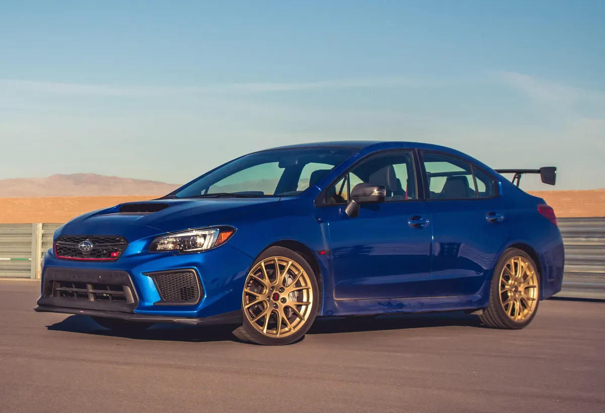
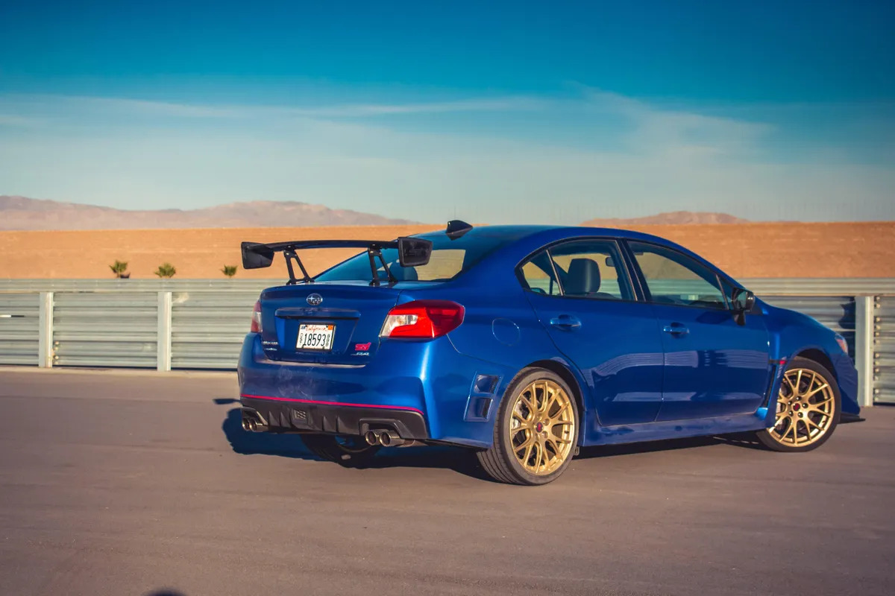
For the model year 2018, but available only in Japan, Subaru debuted the RA-R, which stands for "Record Attempt-Racing," a nod to previous, track-based STI variants. Meanwhile, Subaru Tecnica International helped the vehicle shave 22 lb (10 kg), bringing the weight down to 3,263 lb (1,480 kg) while reinforcing the chassis and putting on bigger brakes while adding some aerodynamic elements. The RA-R uses a turbocharged 2.0 flat-four (H4) engine from the S208, which has an output of 324 hp (242 kW; 328 PS) at 7200 rpm and 319 lb⋅ft (433 N⋅m) of torque in the range of 3200–4800 rpm. A new muffler gives the car an improved gas flow by approximately 60% and a throatier exhaust note.
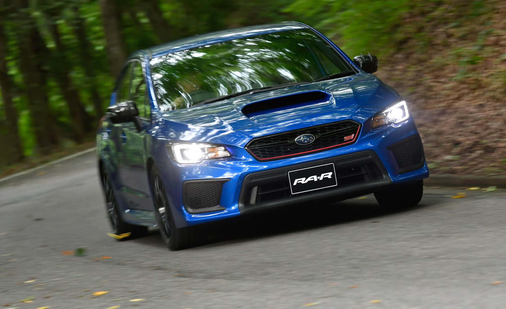
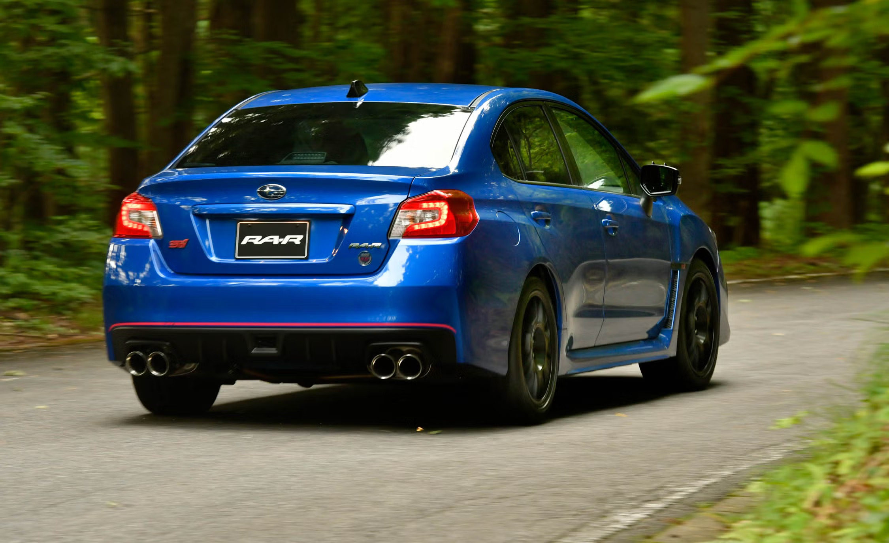
In 2018, Subaru launched the 2019 WRX Raiu edition for the Canadian market, the first limited edition Subaru sold in Canada in 15 years. This model is similar to the Series. Gray edition sold in the US, with its name derived from the Japanese word for thunderstorm. This model was not available with a CVT, buyers could only get a 6-speed manual transmission. The Raiu Edition got upgrades like an STI-branded front lip, side sill, and rear side spoilers, along with a unique short-throw shifter. Black interior and exterior accents were added, with gunmetal finish 18" alloy wheels and Cool Grey Khaki paint also being the only wheel/color options. Jurid front brakes and red-painted calipers were also standard. The Raiu Edition also got the Sport-tech RS trim's existing features, including Recaro front seats with "Ultrasuede," a seven-inch touchscreen "Starlink" multimedia system, and a nine-speaker Harman Kardon stereo system. Only 100 units of the Raiu Edition were made available, with a price point of $40,995 CAD.
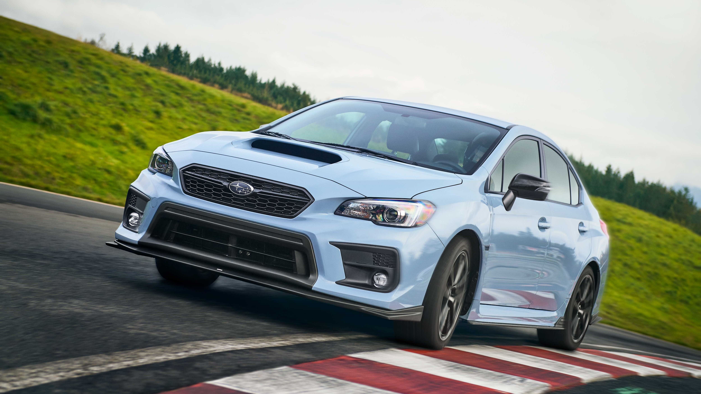
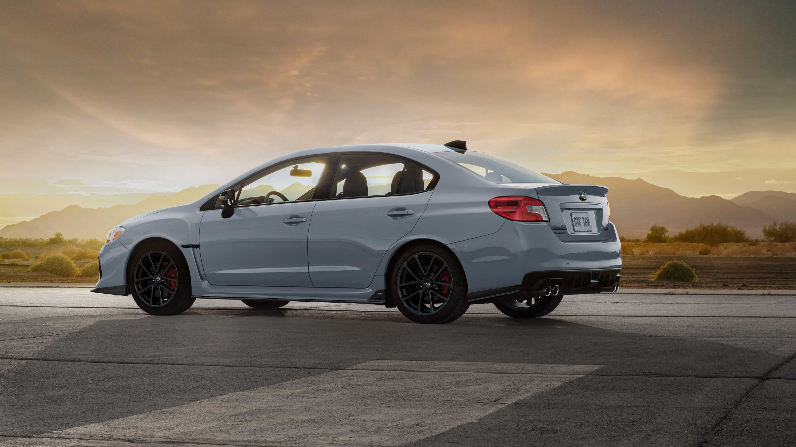
For the 2019 model year, the WRX Series.Gray was made available in the United States with production limited to 750 units. The exterior color was Cool Gray Khaki, featuring exclusive black finish WRX 18-inch alloy wheels, Crystal Black Silica badging and foldable exterior mirrors. Other performance upgrades included Jurid high performance front brake pads and a moonroof delete to save weight. The interior front seats were upgraded to Ultrasuede covered Recaro seats with an 8-way power feature for the driver. An STI version was also sold with 250 made. Both models also got upgraded suspension and brakes.
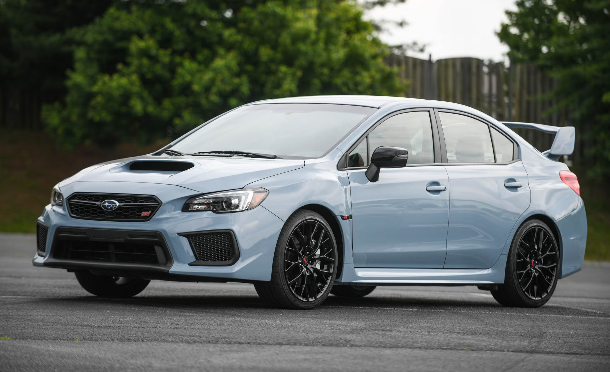
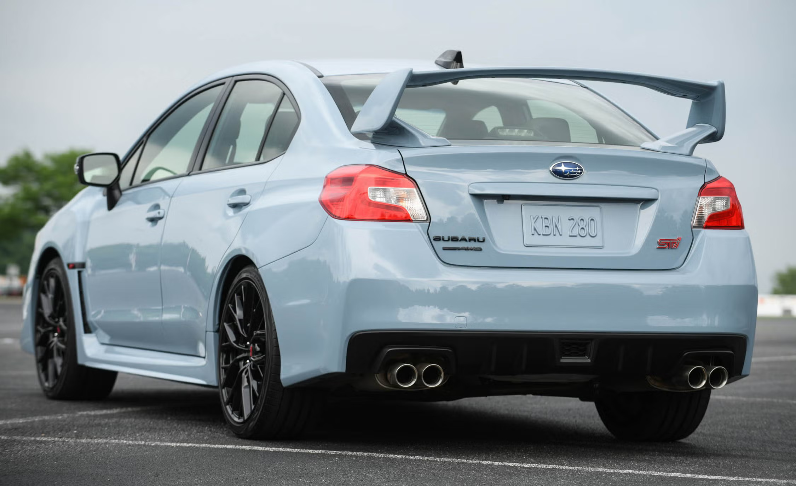
Subaru announced yet another limited-run model of the WRX STI trim for 2018. The TC380 is available only in Japan and one of their most powerful models to date with an output of 380 hp (280 kW; 390 PS). Modifications to each car are overseen by Japanese rally driver Toshihiro Arai, who competed in the World Rally Championship with Subaru. The improvements include a suite of HKS parts, including a GT III RS Sport turbo kit, Sport Turbo resonator and a high-flow catalytic converter. Arai Motorsports will install the HKS parts while adding components of its own, including an RQA air filter and an in-house front chassis brace to help with frame rigidity. A carbon fibre rear lip spoiler aids grip at insanely high speeds and serial-numbered Recaro bucket seats explicitly designed for the TC380 will hold the driver down inside. Overall the automaker plans to manufacture only 50 of the WRX STI TC380. The car will continue production until all 50 units are exhausted, joining a series of other limited edition WRX variants such as the Japanese RA-R, United States Seres.Gray and Canadian Raiu Editions.
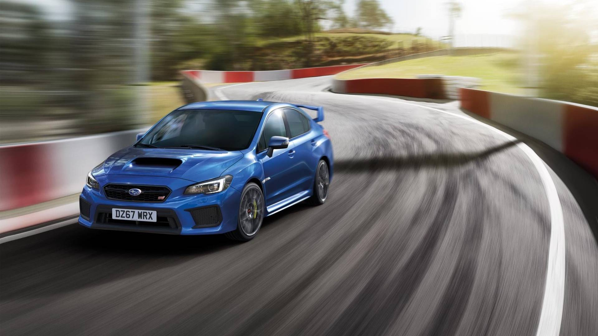
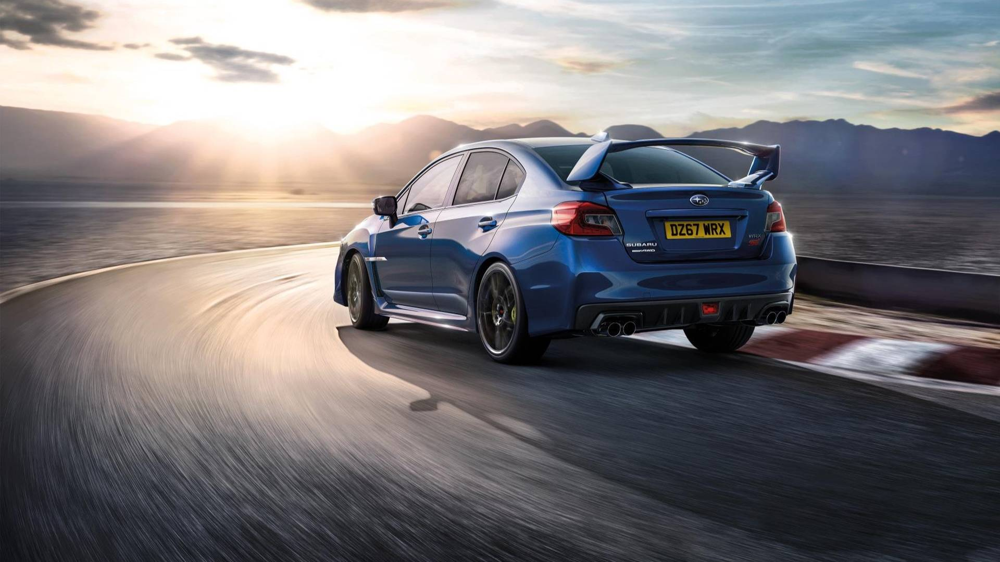
For the 2019 model year, a special edition WRX STI S209 was made available, being the first S series STI sold in the US, and the third S series based on the VA series platform, following the S207 and S208. The S209 is the most expensive Subaru ever at US$64,000, and is only sold in the US with 209 being built. It is also the most powerful, with 341 hp (254 kW) and 330 lb⋅ft (450 N⋅m) of torque out of a modified EJ257. Canards are added to the front, and the STI Type RA's carbon roof and wing are retained. The suspension is improved and derived from other S series cars, along with Subaru's Nürburgring race car. The car is available in WR Blue with grey wheels and Crystal White with gold wheels. The S209 is also transported from the Gunma, Japan plant to Subaru's Kiryu-Kougo subsidiary to be finished since the S209 does not meet the standards for cars manufactured in Gunma. The car is sold under the STI brand rather than the Subaru brand, which has caused difficulties importing the car into the US.
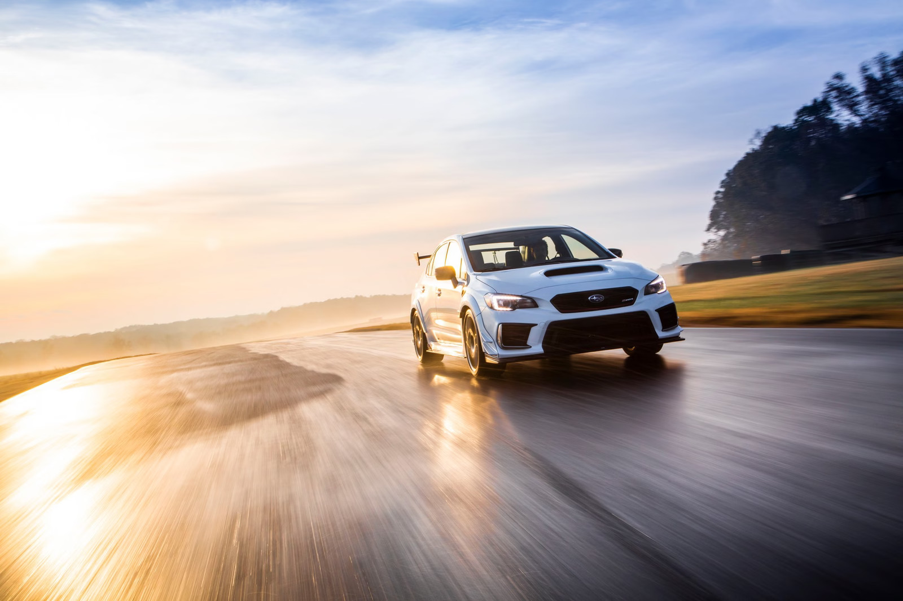
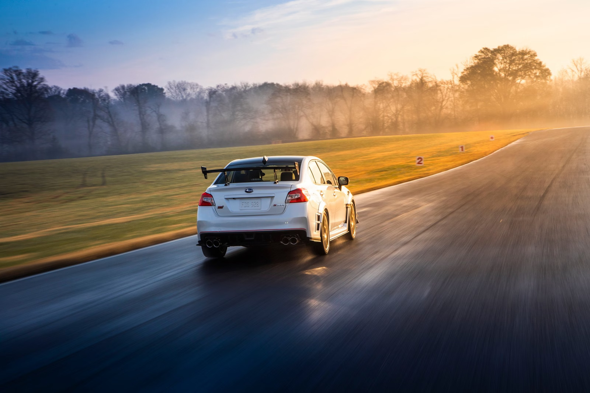
For the 2020 model year, the WRX Series.White was made available, with 500 units built, along with 500 STI models being made. Suspension and braking upgrades were included, along with cosmetic upgrades like bronze wheels and black accents. The car is only available in a special ceramic white.
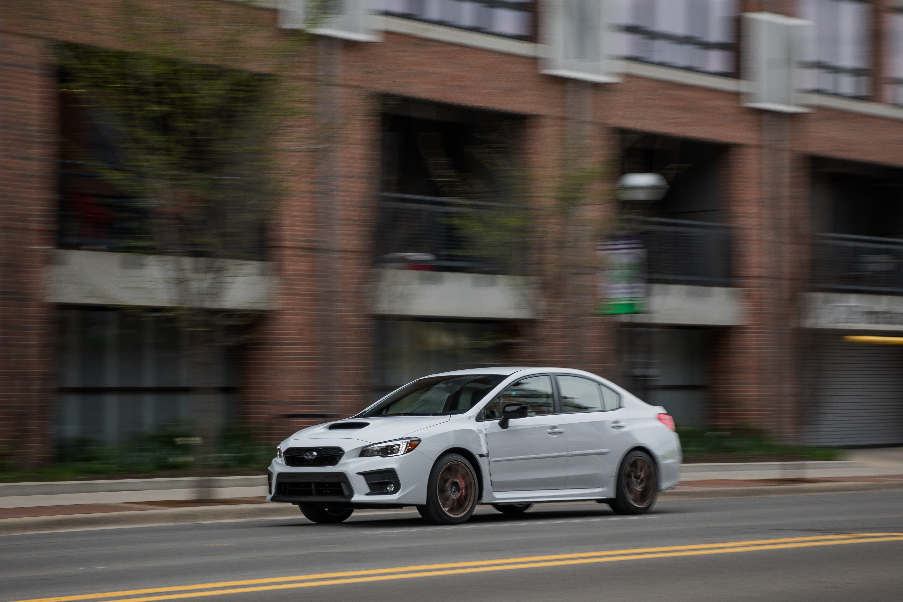
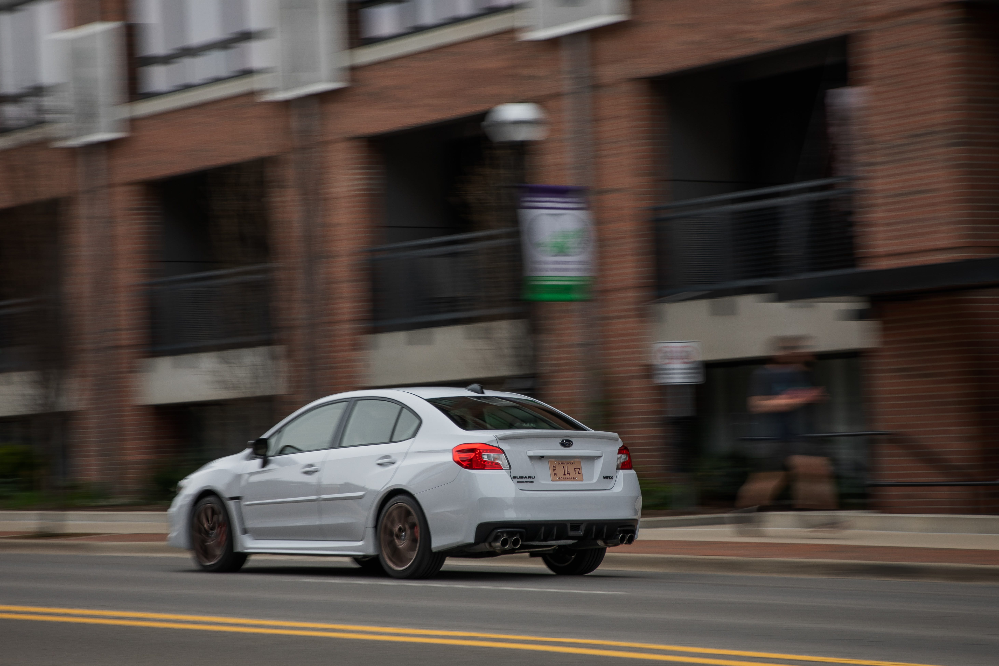
Again for the 2020 model year, but only available to the Canadian market, is the WRX STI Kanrai Edition. Only 75 units were available to the Canadian market compared to the Raiu Edition's 100 units. The WRX STI Kanrai Edition was built on the WRX STI Sport-Tech foundation. Kanrai, which translates to "winter thunder," sports an exclusive Ceramic White exterior paint along with the aggressive characteristics found in the WRX STI. Outfitted on this WRX STI is STI-tuned Bilstein performance suspension, lightweight 19" BBS forged alloy bronze-painted wheels paired with Michelin Pilot Sport Cup 2 tires, which deliver significant handling dynamics and grip. The standard Brembo 6-pot front and 2-pot rear brake system with cross-drilled rotors and silver painted calipers. Subaru removed the spare tire and replaced it with a repair kit to help this STI shave some pounds. The Kanrai incorporates a black low-profile lip spoiler, black badging, mirror caps, and shark fin antenna to complement the Ceramic White paint. What makes it pop is the black front grille receives the STI's unique cherry colour.
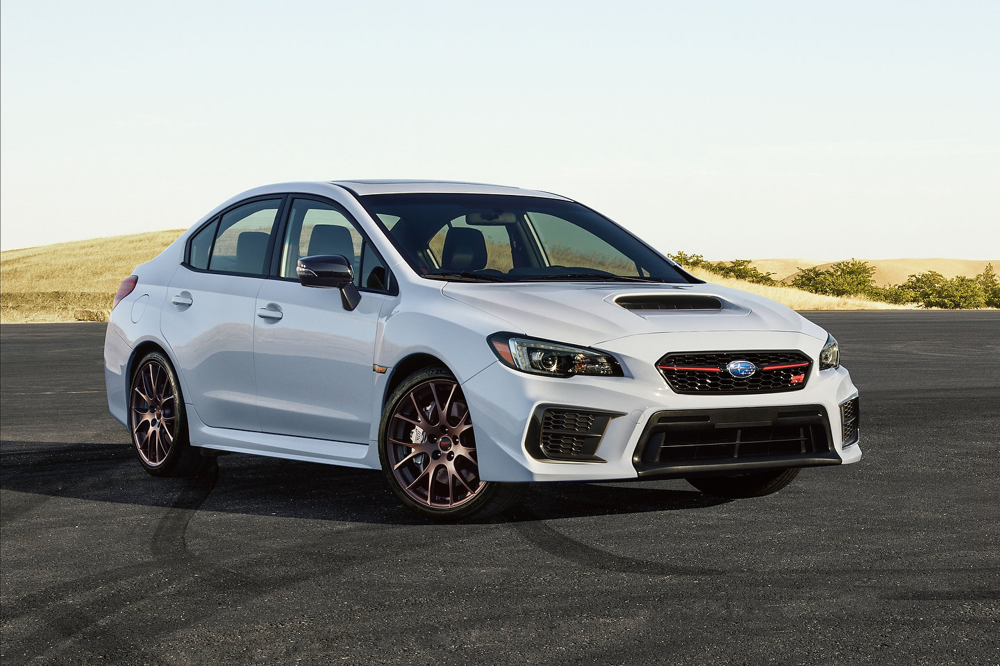
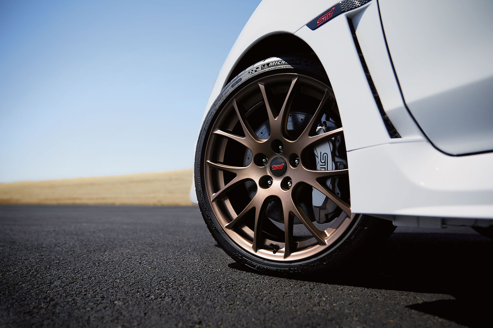
A limited EJ20 Final Edition was made available in Japan in late 2019 to commemorate the end of production of the EJ20 engine. With only 555 units produced, the limited edition has a balanced version of the EJ20 engine, according to Subaru the pistons and connecting rods have a 50 percent reduction in weight differences, crankshafts have an 85 percent lower tolerance in rotational balance, flywheels and clutch covers have a 50 percent reduction in rotational balance tolerances, precision close to that of a racing engine.
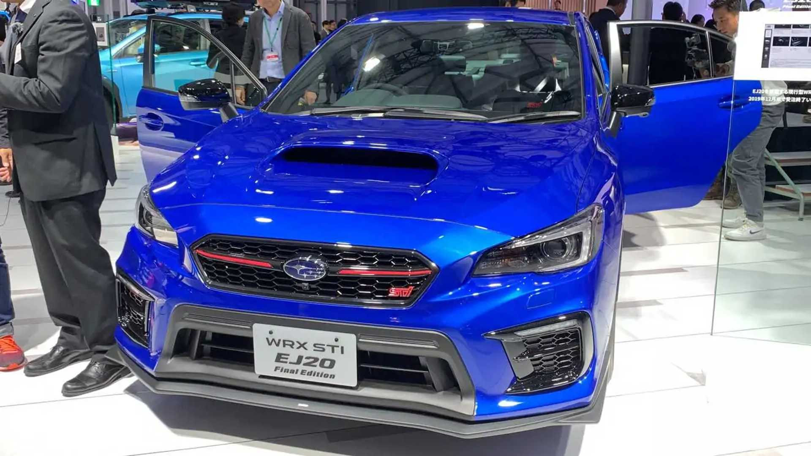
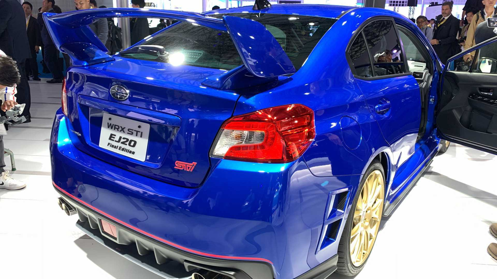
In 1993, an Impreza Group A rally car was taken to Rally Finland after the Subaru Legacy rally car had its last outing at Rally New Zealand. The car was crashed in the race and was never used again for rally, but its good performance was noted, as it made 2nd place and was even leading the rally at one point. The Impreza was smaller and more nimble, giving it an advantage over the Legacy. In 1994, the WRX STI became available and entered use for WRC. Since then, Subaru has stopped competing in WRC, citing the Great Recession as a cause, though they still are active in rally events around the United States using the WRX STI as a basis for their competing cars.
In 2016, former British rally champion Mark Higgins lapped the Isle of Man TT course with the VA WRX STI in 17 minutes, 35.139 seconds.


Subaru Tecnica International have campaigned the WRX STI in the Nürburgring 24 Hours since 2008, winning the SP3T class six times (2011, 2012, 2015, 2016, 2018, and 2019). STI did not enter the 2020 or 2021 contests due to the COVID-19 pandemic.
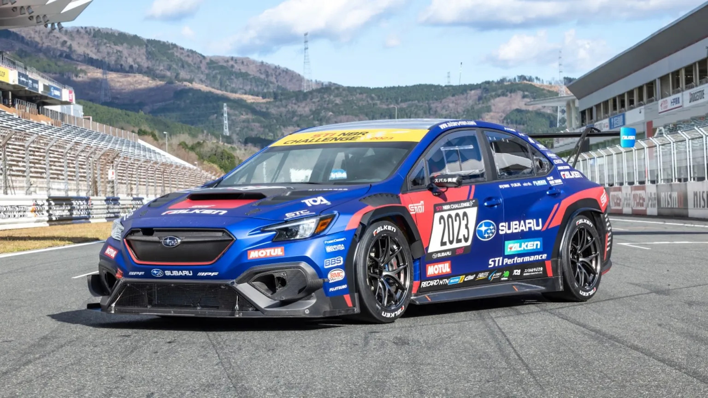
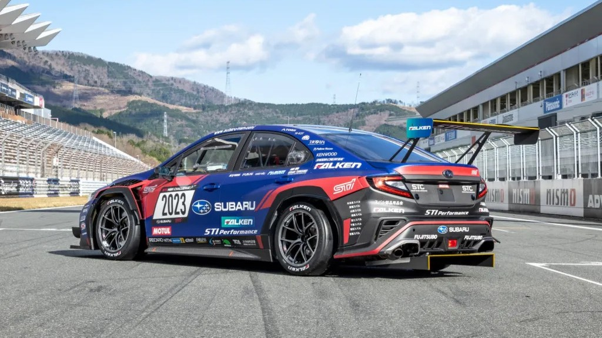
Several touring cars based on the WRX STI were developed by the Italian company Top Run Motorsport and entered the TCR International Series from 2015 to 2017. Following this, the cars were sold to Australia and entered the full TCR Australia series in 2019. The car also made sporadic appearances in TCR Europe and TCR Italy from 2016 to 2018, and TCR UK in 2022 and 2025.
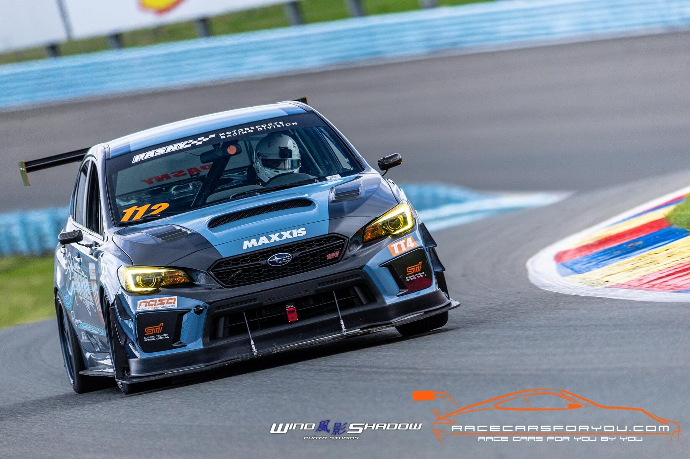
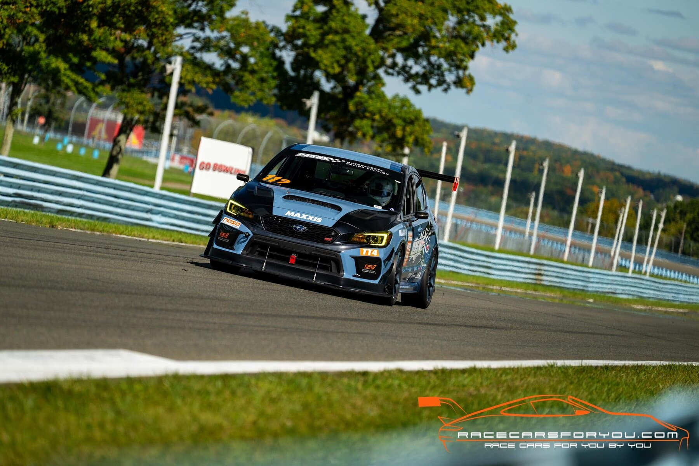